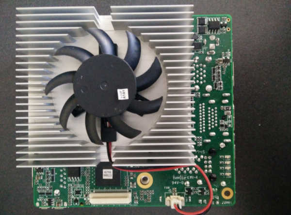
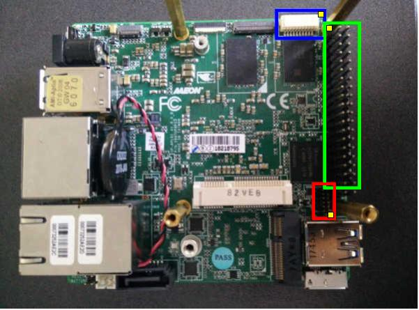
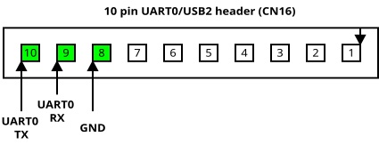
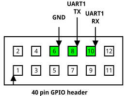
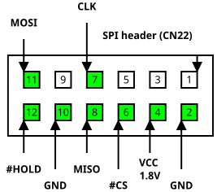

Squared
Overview
Top

Bottom

Mainboard components
Platform
CPU |
Intel Atom, Celeron, Pentium |
PCH |
Intel Apollo Lake |
EC / Super IO |
N/A |
Coprocessor |
Intel TXE 3.0 |
Flash chip
Type |
Value |
|---|---|
Socketed flash |
no |
Vendor |
Winbond |
Model |
W25Q128FW |
Voltage |
1.8V |
Size |
16 MiB |
Package |
SOIC-8 |
Write protection |
No |
Internal flashing |
No |
In circuit flashing |
Yes |
Debugging
UART0 (CN16)
This connector is located on the bottom side (see here).

UART1 (GPIO header)
The GPIO header is located on the bottom side (see here).

Building and flashing coreboot
Using the SPI header
The SPI header is located on the bottom side (see here).

Preparations
In order to build coreboot, it’s necessary to extract some files from the vendor firmware. Make sure that you have a fully working dump.
[upsquared]$ ls
firmware_vendor.rom
[upsquared]$ mkdir extracted && cd extracted
[extracted]$ ifdtool -x ../firmware_vendor.rom
File ../firmware_vendor.rom is 16777216 bytes
Peculiar firmware descriptor, assuming Ibex Peak compatibility.
Flash Region 0 (Flash Descriptor): 00000000 - 00000fff
Flash Region 1 (BIOS): 00001000 - 00efefff
Flash Region 2 (Intel ME): 07fff000 - 00000fff (unused)
Flash Region 3 (GbE): 07fff000 - 00000fff (unused)
Flash Region 4 (Platform Data): 07fff000 - 00000fff (unused)
Flash Region 5 (Reserved): 00eff000 - 00ffefff
Flash Region 6 (Reserved): 07fff000 - 00000fff (unused)
Flash Region 7 (Reserved): 07fff000 - 00000fff (unused)
Flash Region 8 (EC): 07fff000 - 00000fff (unused)
flashregion_0_flashdescriptor.bin
flashregion_1_bios.bin
flashregion_5_reserved.bin
Clean up
[coreboot]$ make distclean
Configuring
[coreboot]$ touch .config
[coreboot]$ ./util/scripts/config --enable VENDOR_UP
[coreboot]$ ./util/scripts/config --enable BOARD_UP_SQUARED
[coreboot]$ ./util/scripts/config --enable NEED_IFWI
[coreboot]$ ./util/scripts/config --enable HAVE_IFD_BIN
[coreboot]$ ./util/scripts/config --set-str IFWI_FILE_NAME "<flashregion_1_bios.bin>"
[coreboot]$ ./util/scripts/config --set-str IFD_BIN_PATH "<flashregion_0_flashdescriptor.bin>"
[coreboot]$ make olddefconfig
Red Unlock
If you want to red unlock the CPU at boot and execute code at ramstage (see mainboard/up/squared/red_unlock.c),
you can enable the RED_UNLOCK option. Note the IFWI file you configured above must be coming from a
red unlocked firmware.
[coreboot]$ ./util/scripts/config --enable RED_UNLOCK
[coreboot]$ ./util/scripts/config --disable "DEFAULT_CONSOLE_LOGLEVEL_$(./util/scripts/config --state DEFAULT_CONSOLE_LOGLEVEL)"
[coreboot]$ ./util/scripts/config --enable DEFAULT_CONSOLE_LOGLEVEL_0
[coreboot]$ make olddefconfig
Building
[coreboot]$ make
Now you should have a working and ready to use coreboot build at build/coreboot.rom.
Flashing
[coreboot]$ flashrom -p <your_programmer> -w build/coreboot.rom
Board status
Working
bootblock, romstage, ramstage
Serial console UART0, UART1
SPI flash console
iGPU init with libgfxinit
LAN1, LAN2
USB2, USB3
HDMI, DisplayPort
eMMC
flashing with flashrom externally
Work in progress
Documentation
ACPI
Not working / Known issues
Generally SeaBIOS works, but it can’t find the CBFS region and therefore it can’t load seavgabios. This is because of changes at the Apollolake platform.
Untested
GPIO pin header
60 pin EXHAT
Camera interface
MIPI-CSI2 2-lane (2MP)
MIPI-CSI2 4-lane (8MP)
SATA3
USB3 OTG
embedded DisplayPort
M.2 slot
mini PCIe
flashing with flashrom internally using Linux